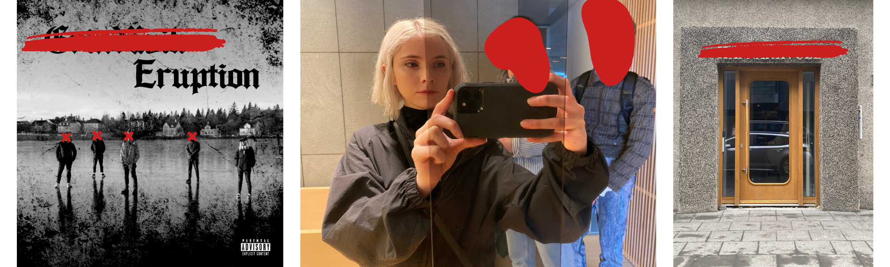

Redacted
Architectural Project
Design Team Lead
Designing an estate building and grounds for Individual Redacted in Location Redacted.
Project Summary
From March 2022 to June 2024, I served as design lead on an architectural project for a Client — a billionaire with eccentric and highly specific tastes, who wanted a significant private estate with undefined functions in an as-yet-undefined location. It began with a conversation between the Client and the Project Lead, a philosopher who, after that conversation, started building a small consortium to take the idea on. He brought me on first; I in turn brought on a Design Studio to handle architectural execution alongside me. The five of us were the whole project: me as designer, the three of them (whose architectural design experience anchored the team), and the Project Lead as team lead. Over the course of those two-plus years, we developed an entirely new philosophy of design — which we named Classical Futurism, and which used a conceptual hierarchy created by observing and prioritizing the Foundational Concepts in a synthesis of design around the needs of the individual or groups for which the architectural structure and surrounding space existed. From this philosophy emerged a new school of design and, in turn, a new architectural aesthetic, developed with the explicit aim of being genuinely cutting-edge: starting from first principles and going until something truly new was created. This required the creator(s) to utilize novel materials, structural innovation, technology integration, environmental systems, and the raw spirit of the individual or group that the form and spaces served, all while integrating into the already existing surrounding environment. The estate’s program — which we proposed and iterated on as the Client’s (often scarce) feedback came in — eventually encompassed private gardens and a pool, a separate building for offices and meeting rooms, a Redacted Program Element, a publicly-accessible garden, a Redacted Program Element, and the estate house itself with three floors and an observatory, all to be sited on a roughly 25,000-square-foot plot.
Phase One: Pitch Preparation (March–December 2022)
The first phase ran from March through December 2022 — nine months of preparing to pitch the Client after his initial verbal interest. We brought on the Design Studio shortly after the Project Lead and I started discussing the project, and the months that followed were a lot of deep discussion around what the Client might want, with the philosophy built in parallel. It was partly inspired by the Project Lead being a PhD-carrying (and very much legitimate, not arm-chair) philosopher, and partly by the fact that we knew the Client wouldn’t trust the direction of anything without a well-structured philosophical underpinning. The pitch itself was a deck, the beginnings of Classical Futurism, and early Midjourney and Stable Diffusion renderings of the style — and we actually pitched two buildings, a corporate one and a private estate, of which the Client chose the estate. We made the pitch in the Client’s house, in his dining room, at 9am. I remember hesitating when I was offered coffee by his staff: do I take it? What does it say about me if I do? I was also the only woman on the team, so was feeling some pressure there to present myself pretty much perfectly. The Client always had very few words for us — unless they were either comments on geopolitics or the economy, or extremely challenging questions about our work — and we always tried to be prepared for exactly what those might be. The pitch was no different. We nailed it, honestly, and the Project Lead was very tuned into exactly what the Client might object to or be skeptical of. He said “let’s do it,” and it was very unclear whether that was a real yes — but the project was confirmed greenlit when his team reached out for contract negotiation. We were never officially paid for those first many months; it was made up to us later by a generous travel budget.

Phase Two: Site Search and Design Language (January 2023–Early 2024)
Phase Two ran from January 2023 to early 2024. We spent months on the city search itself — building out a giant comparison matrix, a series of written city profiles, criteria-driven scoring, creating and applying new concepts along the way. We asked questions like “do the industrial elites get along with the old money elites in Defunct Location? Seems so, but why? That’s not the case in Redacted Location…” Our search criteria accounted for economic environment, political environment, accessibility by both airplane and supersonic jet, climate, climate in the case of Redacted Consideration, urban environment type and functionality, legal functionality, and the functionality of the resident elites. We built our own nuanced measurement system of things like safety and regions of Redacted Consideration power. We made lists of notable individuals — like Redacted Individual in Defunct Location or Redacted Individual who for some reason has their residency in Defunct Location (we figured out why) — who resided in cities and ascertained why they lived to a depth that they themselves may not even understand. And of course the secret project-sniper: could a foreigner purchase property there, or would the Client have to add another citizenship to his list? There was no working from a shortlist… we started with everything. Every country in the world. The top two or three cities in each, more if more were notable. We spent months graphing and mapping and debating and chiseling away at the list until we narrowed it down to one city: Site Location. Along the way, we traveled to Defunct Location, just north of Defunct Location, to see a beautiful site. It would have been a breeze to get, was just the right size, and we had a brilliant design draft going for it. Unfortunately, the Client has nothing but negative things to say about Defunct Location, especially the Defunct Location, and forbade that option. I wanted to cry. If we’d gone that route, I think we would have built it. We went to Site Location three or four times — always in winter, the days always very short, but it was a beautiful place to be regardless, and the culture was always richly alive despite the weather. The whole team once walked out on a lake in the middle of the city to take a picture, all of us standing there staggered, and it looked like a 90s grunge album cover — the kind of CD you find in the bargain bin and know exactly one song off of. Once we’d locked in the site (which happened to be the previous Landmark), the Client’s Real Estate Specialist joined the team. He was one of the Client’s real estate team members, and he fit right in with us. In parallel with all this, Classical Futurism really came into its own as a school and an aesthetic. In Phase One the philosophy had taken shape in the form and process of starting from first principles, and we’d gotten the aesthetic to “Redacted Design Consideration”; Phase Two went deeper, into how a philosophy could — and did — become a design language. We really built out the connection between the grounded, lost arts of building for the Human and building for the gods, both found in ancient architecture, and started to smoothly bridge those concepts to ones that resonated with us when we envisioned the future and what could be built and how it could serve not only the Client, but the world, as an example. I’m not using “cutting-edge” as a buzzword here. The stuff we were doing was revolutionary. That’s what happens when you get a bunch of futurists and designers and philosophers and artisans together who really want to deliver and believe great things are on the horizon. Program planning came a very long way in this phase, too. After we locked into a site, we started having to work with the constraints that it presented: we could no longer have a stand-alone grand library and a building devoted to offices and housing for the Client’s guests, so we had to combine things in creative ways and intuit his needs. One huge innovation on the design philosophy here — and a crucial pillar of the school of architectural design that was developed — was creating a space that facilitates the growth of the person or group it’s intended for, without dwarfing them or drowning them in expectation. That’s a hard and very individual balance to strike.
This is a long and challenging story for me to write, so I’m taking a break here and will add the ending later…
…to be continued